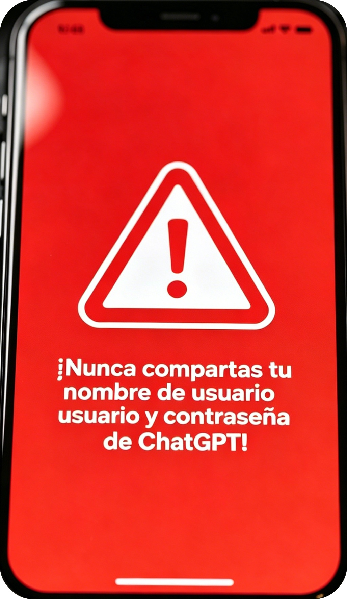
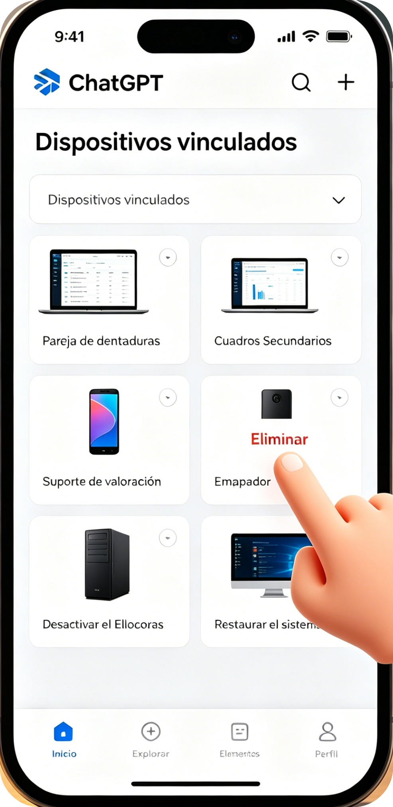
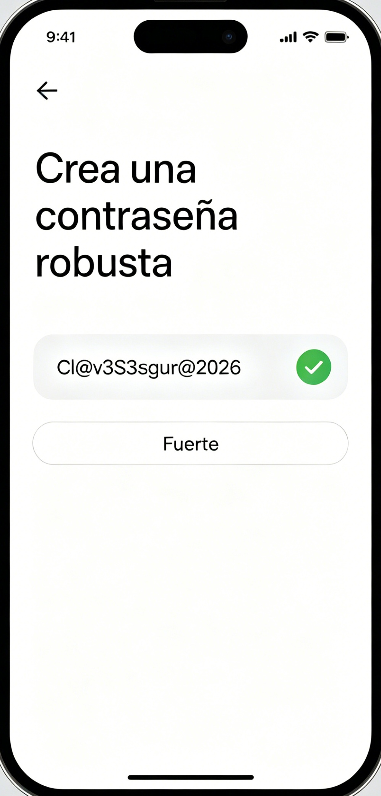
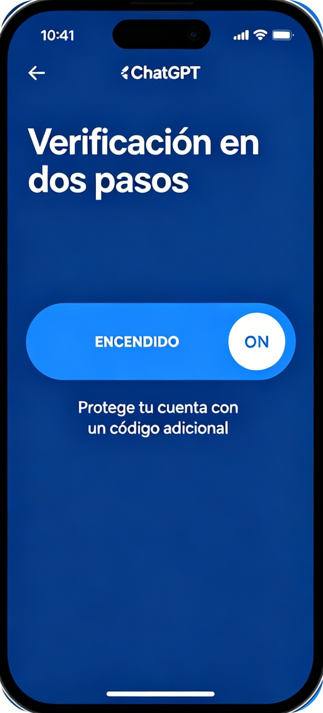

🇲🇽 No compartas tu cuenta de ChatGPT con terceros | Riesgos y protección 2026
[Espacio publicitario superior]
🚀 Resumen rápido: Nunca prestes tu usuario y contraseña de ChatGPT. Compartir la cuenta causa bloqueo permanente o robo total del acceso.
Muchos mexicanos comparten su cuenta en grupos de WhatsApp y Facebook para usar Plus sin pagar.
Esta costumbre es la causa principal de pérdida total de la cuenta.
❓ Consecuencias de compartir tu cuenta
- Bloqueo permanente por accesos desde varios lugares
- Otras personas cambian tu contraseña y te roban la cuenta
- Pérdida de todos tus chats y datos privados
- Responsabilidad por contenido prohibido hecho con tu perfil
[Espacio publicitario central]
✅ Pasos para proteger tu cuenta (con imágenes)
Paso 1: Nunca compartas datos de acceso
Tu cuenta es personal, no la prestes a amigos ni desconocidos.

Paso 2: Elimina dispositivos extraños vinculados
Entra a ajustes y borra equipos que no hayas usado tú.

Paso 3: Crea una contraseña robusta
Combina mayúsculas, minúsculas, números y símbolos, sin Ñ ni tildes.

Paso 4: Activa verificación en dos pasos
Es la mejor protección, nadie accede aunque tenga tu contraseña.

❌ Mitos falsos que creen los usuarios
- “Compartir con amigos no pasa nada” → Falso, OpenAI detecta accesos múltiples
- “Solo corre riesgo si tienes Plus” → Falso, todas las cuentas tienen mismas reglas
📌 Resumen rápido
- No compartas correo ni contraseña
- Borra dispositivos no reconocidos
- Usa clave segura
- Activa verificación en dos pasos
[Espacio publicitario inferior]
💬 Deja un comentario
Perdí mi cuenta al prestarla, ahora sigo estos pasos para protegerla.
Quité dispositivos extraños gracias a la guía, muy práctico.